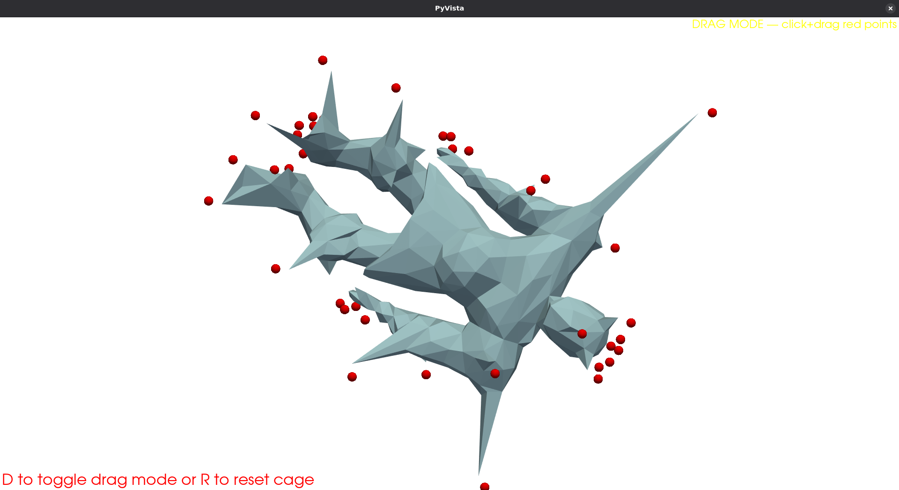
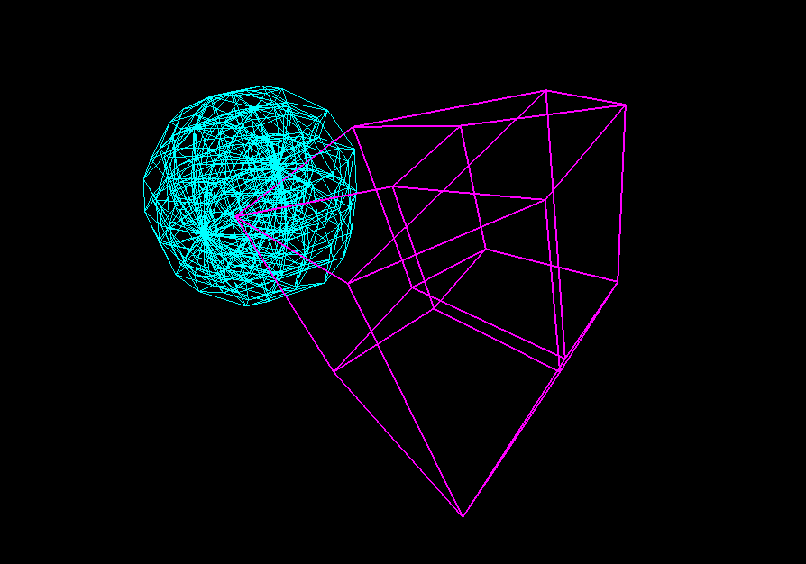
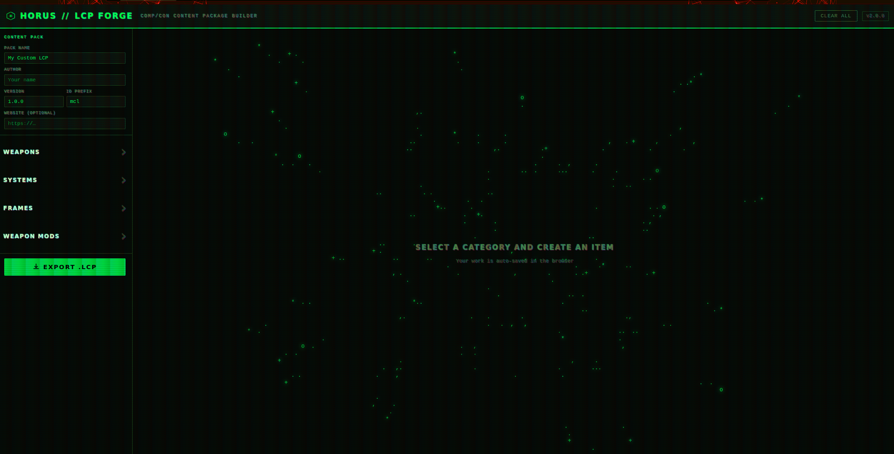
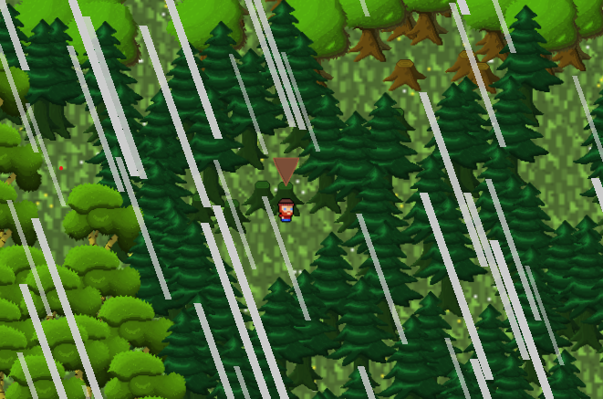

Hello World,
I'm Jett Schreiber.
I turn math into pixels.
I am a Graphics programmer working at the intersection of GPUs, rendering, and real-time simulation. I write shaders, build renderers, and care about the frame budget. Currently looking for my next role.
about
Most of my work lives somewhere on the path from a math problem to a pixel. This can include things like shaders, rendering pipelines, GPU compute, and the geometry and lighting that drive them. My work has largely been in the real-time pipeline, but I'm always willing to dive into an asynchronous application.
Outside of work, I read SIGGRAPH papers, build modeling tools, and experiment with new graphics tech.
projects
-

An implementation of Joshi et al.'s "Harmonic Coordinates for Character Articulation" (SIGGRAPH 2007). A cage is built around a mesh, then a hand-written solver computes the harmonic weights: it assembles the (powered) cotangent Laplacian, partitions interior from cage-boundary vertices, applies the Dirichlet boundary conditions, and solves the resulting sparse system with SciPy. libigl supplies only the discrete operators. The weights are precomputed once, so dragging the cage's control points deforms the mesh smoothly in real time. Includes an interactive PyVista viewer with view/drag modes and full camera controls.
-

A basic physics engine working in 4-dimensional space. Implements collision detection, constraint solving, and rigid-body dynamics in a hyperspace environment. Includes visualization tools across multiple platforms to explore and interact with 4D physical systems in real time.
-

A browser-based content-package builder for the LANCER TTRPG. Build custom weapons, mech systems, frames, and mods, then export a valid
.lcpfile, zipped on the client's side with JSZip, to import straight into the online tool Comp/Con. -
A multi-agent reinforcement-learning controller for tarantula locomotion in the Unity game engine. Each of the eight legs is an independent ML-Agents agent that has to coordinate with the others to produce a stable, efficient stride.
-

A collaborative entry for GitHub's Game Off game jam, built in Godot with GDScript and custom GDShaders. Worked as part of a small team, splitting up gameplay, level generation, and rendering systems and integrating them through a shared Git workflow of branches, pull requests, and merges to keep everyone's work in sync.
education
-
2021-2026
B.Sc. Computer Science @ University of Victoria
Specialization in Computer Graphics, with a minor in Business. Coursework spanning real-time rendering, GPU programming, geometry processing, and the math underneath them. This was paired with the business side for the product and team around the tech.
Relevant coursework: Computer Modeling, Introduction to AI, Computer Animation, Algorithms and Data Structures, Mining of Massive Datasets, Entrepreneurship
experience
-
January 2025 - August 2025
IT Support Technician @ Blackman Support Services
Worked in the IT department, providing technical support and maintenance of computer systems. Hands-on networking and hardware knowledge, with server setup and troubleshooting skills.
-
2026 - ?
Graphics Programmer @ Your Company Here
This slot's open. You could be next.
torus rendering after Andy Sloane's donut math
hobbies
Away from my computer I spend a lot of time 3D printing. It's a natural extension of the graphics work. I model parts, dial in settings, and troubleshoot/maintain the mechanical side of the printer itself.
I also dabble in game development, mostly small projects and game jams, where a tight deadline forces you to focus hard and actually ship something playable.
And when I want to step away from a screen entirely, I cook. I like how you have to follow a process, read the feedback, and modify the recipe until the result is what you were after.
contact
Currently open to graphics, rendering, GPU, engine, and tech roles. Find me here: